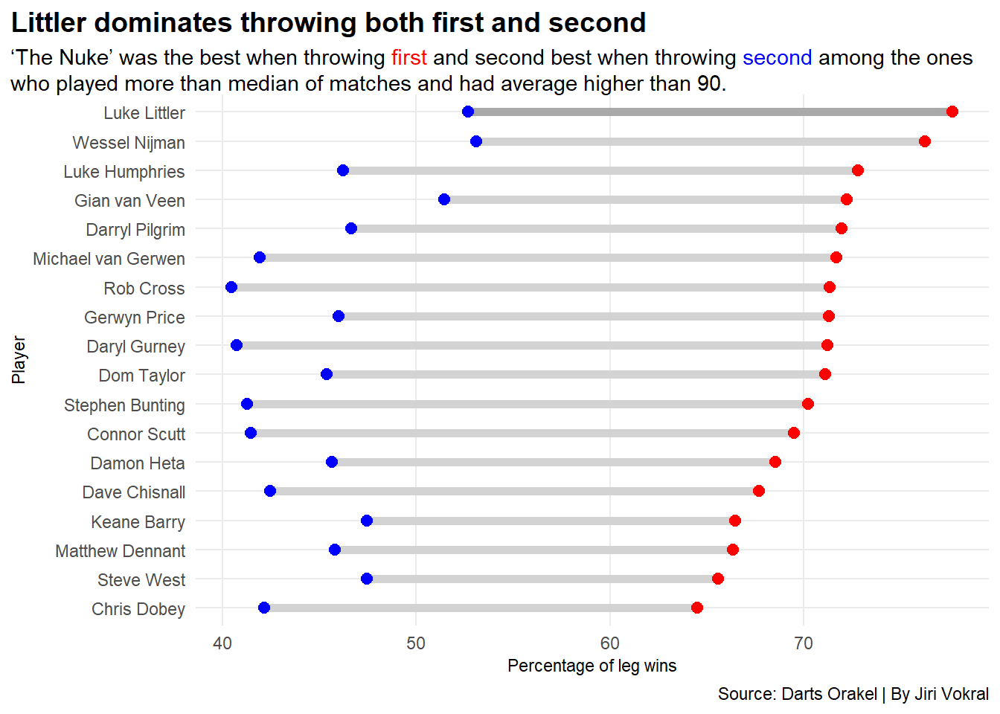
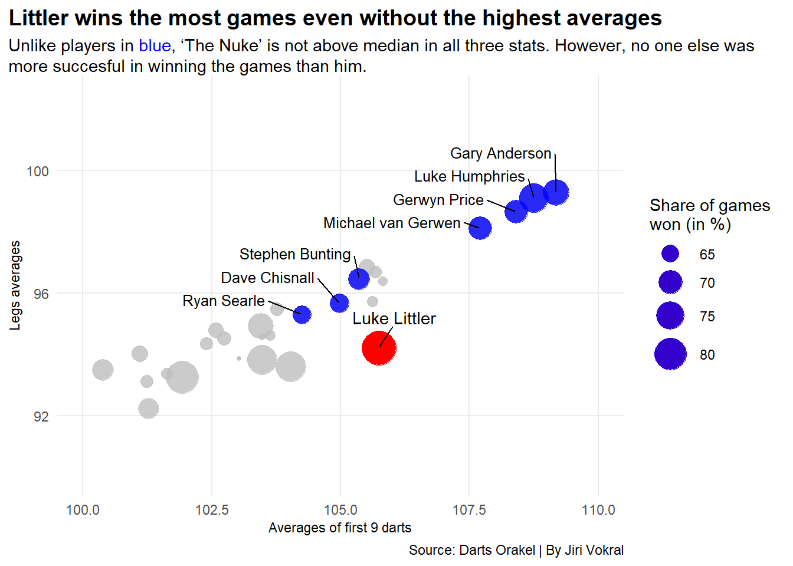
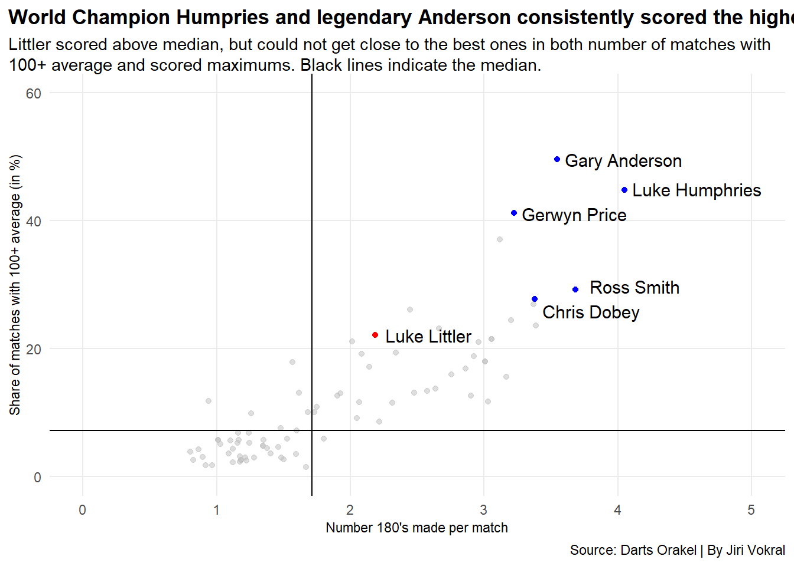
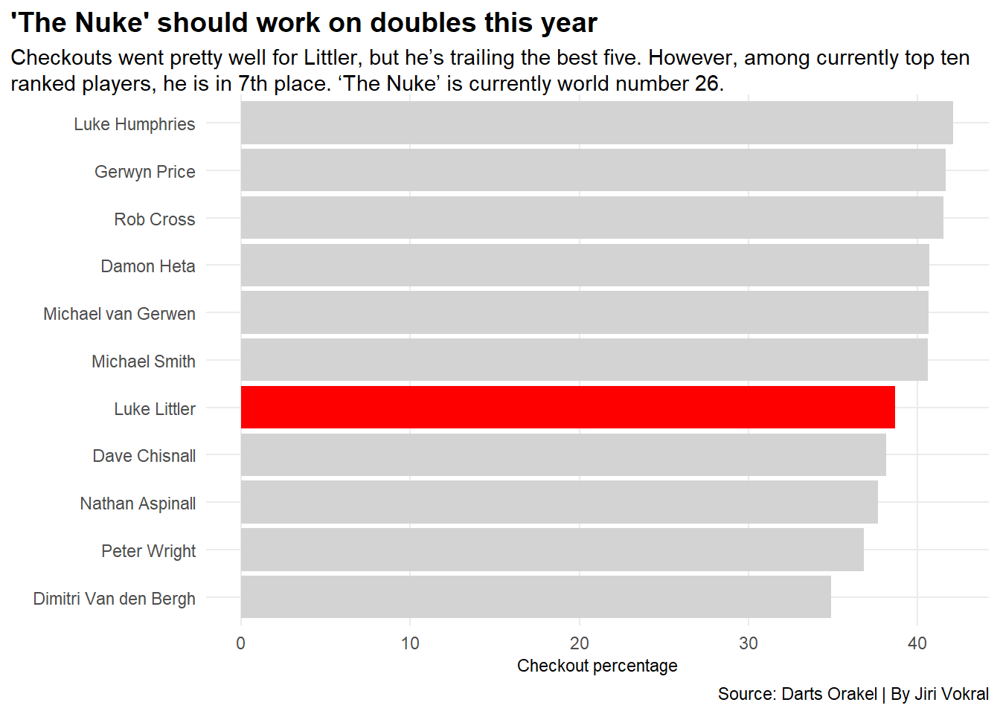

Is Luke Littler the best player in the world of darts at the moment?
Author
Jiri Vokral
Published
April 14, 2024
At the turn of last year and this year, millions of fans around the world heard on Sky Sports broadcast: “Triple twenty will leave him double ten. And he finishes it on double ten! Luke Littler by name, but right now arguably the biggest name in the world of darts. Littler takes the giant step into the World Championship final. He made it nineteen days shy of his 17th birthday, and tomorrow he could be the World Darts Champion!”
The entire world of darts learned to count on a new rising star. Luke Littler made it to the World Championship final at the age of 16. He had to go through all of the rounds to reach the finals as he was not seeded due to his position in the world rankings.
The youngster, with the nickname “The Nuke”, was already good before the World Championship, and he continues to be in great form. Data from the end of March 2023 to the end of March 2024, that compare him with the 112 best players in the world, show how good he actually was.
Code
library(tidyverse)library(ggalt)library(ggtext)library(ggrepel)players <-read_csv("DartsFinalData2.csv")new_top<- players |>filter( Played >=126& AVG >90& Pct_Legs_Won_Throwing_first >60& Pct_Legs_Won_Throwing_second >40 ) littler <- new_top |>filter( Player =="Luke Littler" )ggplot() +geom_dumbbell(data=new_top, aes(y=reorder(Player, Pct_Legs_Won_Throwing_first), x=Pct_Legs_Won_Throwing_second, xend= Pct_Legs_Won_Throwing_first),size =2,colour ="lightgrey",colour_x ="blue",colour_xend ="red") +geom_dumbbell(data=littler, aes(y=reorder(Player, Pct_Legs_Won_Throwing_first), x=Pct_Legs_Won_Throwing_second, xend= Pct_Legs_Won_Throwing_first),size =2,colour ="darkgrey",colour_x ="blue",colour_xend ="red") +theme_minimal() +labs(title="Littler dominates legs throwing both first and second", subtitle =" Among those who played more than the median of matches and had an average higher than 90, 'The Nuke' was the best when throwing <span style = 'color:red;'>first</span> and the second best when throwing <span style = 'color:blue;'>second</span>.", y="Player", x ="Percentage of leg wins", caption="Source: Darts Orakel | By Jiri Vokral" ) +theme(plot.title =element_text(size =14, face ="bold"),axis.title =element_text(size =8.5), plot.subtitle =element_textbox_simple(size=11), panel.grid.minor =element_blank(),plot.title.position ="plot" )

He won more than 77 percent of those legs. That’s five percentage points more than world number one Luke Humphries and six more than three-time world champion and world number two Michael van Gerwen. Littler’s success rate dropped to 52.67 percent on the occasions when he went to the dartboard second. However, that is still the second-best result of all the players.
“The Nuke” sent one opponent after another home at the World Championship. When he faced the legendary Raymond van Barneveld in the round of sixteen, the pundits didn’t give Littler much of a chance. But they were wrong. Littler defeated the former world number one and world champion 4:1.
Even Brendan Dolan and world number eight and former world champion Rob Cross couldn’t send him home.
Littler led 4:2 in the final. He became the darling of the fans, who chanted, “You’ve got school in the morning, school in the morning!”
But in the end, Luke Humphries turned the dramatic finals around and became the world champion and world number one. But Littler’s performance earned him an invitation to Premier League Darts, a select company of the best darts players who would meet in fifteen tournaments throughout the spring.
In eleven tournaments so far, he has reached the finals four times and won twice. As a result, Littler currently leads the overall standings in the highly prestigious Premier League.
So, is “The Nuke” the best player in the world right now?
“No. No way,” Littler said when he was asked this question after one of the matches at the World Championship. “You still got Luke Humphries in there, you still got Michael van Gerwen in there. I’m one of the best right now in terms of performance, but I’m not the best in the world,” he added.
Well.
Littler had the highest winning percentage during the whole year. He played a total of 398 games (by far the most of all players, the second-highest result is 339), of which he won 333. This means that he won more than 83 percent of all his games (median among players who had average higher than 92 and won more than 60 percent of their games was 64.2 percent).
Code
bubble <-read_csv("DartsFinalData2.csv")new_bubble <- bubble [-56,]|>mutate(Win_Pct = (Won/Played)*100 ) |>filter( AVG >92, Win_Pct >60 ) luke_littler <- new_bubble |>filter( Player =="Luke Littler" )bubble_top <- new_bubble |>filter( AVG >98& First_9_averages >107 )bubble_top2 <- new_bubble |>filter( AVG >94.695& First_9_averages >103.7& Win_Pct >64.22764 )ggplot() +geom_point(data=new_bubble, aes(x=First_9_averages, y=AVG, size= Win_Pct),color ="grey",alpha=.8 ) +geom_point(data=luke_littler, aes(x=First_9_averages, y=AVG, size= Win_Pct),color ="red" ) +geom_point(data=bubble_top2, aes(x=First_9_averages, y=AVG, size= Win_Pct),color ="blue",alpha=.8 ) +scale_x_continuous(limits =c(100,110)) +scale_y_continuous(limits =c(90,102.5)) +geom_vline(xintercept =103.64) +geom_hline(yintercept =94.61 ) +scale_size_continuous(range =c(1,10), name ="Share of games \nwon (in %)") +geom_text_repel(data=luke_littler, aes(x=First_9_averages, y=AVG, label=Player), nudge_y =1, nudge_x = .3) +geom_text_repel(data=bubble_top2, aes(x=First_9_averages, y=AVG, label=Player), nudge_y = .72, nudge_x =-1.4, size=3.4) +theme_minimal() +labs(title="Littler wins the most games even without the highest averages", subtitle ="Unlike players in <span style = 'color:blue;'>blue</span>, 'The Nuke' is not above median in all three stats. However, no one else was more succesful in winning the games than him. Black lines indicate the median of first 9 darts and overall averages.",y="Legs averages", x ="Averages of first 9 darts", caption="Source: Darts Orakel | By Jiri Vokral" ) +theme(plot.title =element_text(size =14, face ="bold"),axis.title =element_text(size =8.5), plot.subtitle =element_textbox_simple(size=11), panel.grid.minor =element_blank(),plot.title.position ="plot" )

Littler made his presence felt at the PDC World Championships. Prior to this tournament, he had been hovering on the fringes of PDC and junior events. For example, he took over the final of the 2023 PDC World Youth Championships and defeated Gian van Veen 6:4 in sets.
Media refer to Littler also as “180’s machine”. He had most of them thrown (869) in the past 12 months. “The Nuke” also played the most games of any of the top 112 players in the world.
Code
scatter <-read_csv("DartsFinalData2.csv")|>filter( Played >100 ) |>mutate(Hundreds_plus =`100+_averages_percentage`,Maxs_per_match =`180's`/Played )luke_littler_scatter <- scatter |>filter( Player =="Luke Littler" )scatter_top <- scatter |>filter( Maxs_per_match >3.2& Hundreds_plus >27 )ggplot() +geom_point(data=scatter, aes(x=Maxs_per_match, y=Hundreds_plus), color="grey", alpha=.5) +geom_point(data=luke_littler_scatter, aes(x=Maxs_per_match, y=Hundreds_plus), color="red") +geom_point(data=scatter_top, aes(x=Maxs_per_match, y=Hundreds_plus), color="blue") +scale_x_continuous(limits =c(0,5)) +scale_y_continuous(limits =c(0,60)) +geom_vline(xintercept =1.714514) +geom_hline(yintercept =7.245) +geom_text_repel(data=luke_littler_scatter, aes(x=Maxs_per_match, y=Hundreds_plus, label=Player), nudge_x = .4, size=4 ) +geom_text_repel(data=scatter_top, aes(x=Maxs_per_match, y=Hundreds_plus, label=Player), nudge_x = .4, size=4) +theme_minimal() +labs(title="World Champions Humpries and Anderson consistently scored the highest", subtitle ="Littler could not get close to the <span style = 'color:blue;'>best ones</span> in both number of matches with 100+ average and scored maximums per match. Black lines indicate the median.",y="Share of matches with 100+ average (in %)", x ="Number 180's made per match", caption="Source: Darts Orakel | By Jiri Vokral" ) +theme(plot.title =element_text(size =13, face ="bold"),axis.title =element_text(size =8.5), plot.subtitle =element_textbox_simple(size=11), panel.grid.minor =element_blank(),plot.title.position ="plot" )

On a per-game basis, Littler “only” threw 2.18 maximums per game, which puts him in 29th place in this statistic. Luke Humphries managed to score more than 4 per game.
Littler managed hit an average of more than 100 points in 22 percent of his matches. Two-time world champion Anderson did it in 45.59 percent of his games, and the oft-mentioned Humphries in almost 45 percent.
In both stats, Littler is above the median, but well behind the best players.
What still significantly drags down Littler is his checkout success rate. Any player can close his leg by scoring the appropriate double. For instance, if a player has 40 left, he can close the leg with a double 20.
Code
bar <-read_csv("DartsFinalData2.csv")top_bar_players <-c("Luke Humphries", "Michael van Gerwen", "Michael Smith", "Nathan Aspinall", "Gerwyn Price", "Rob Cross", "Dave Chisnall", "Peter Wright", "Dimitri Van den Bergh", "Damon Heta", "Luke Littler")new_bar <- bar |>filter(Player %in% top_bar_players) |>select(Player, Checkout_Pct)top_bar <- new_bar [-7,] ggplot() +geom_bar(data=top_bar, aes(x=reorder(Player, Checkout_Pct), weight=Checkout_Pct), fill="lightgrey") +geom_bar(data=luke_littler, aes(x=reorder(Player, Checkout_Pct), weight=Checkout_Pct), fill="red") +coord_flip() +theme_minimal() +labs(title="'The Nuke' should work on doubles this year", subtitle ="Checkouts went pretty well for Littler, but he's trailing the best five. However, among currently top ten ranked players, he is in 7th place. 'The Nuke' is currently world number 26.",y="Checkout percentage", x ="", caption="Source: Darts Orakel | By Jiri Vokral" ) +theme(plot.title =element_text(size =14, face ="bold"),axis.title =element_text(size =8.5), plot.subtitle =element_textbox_simple(size=11), panel.grid.minor =element_blank(),plot.title.position ="plot" )

However, even top players sometimes fall behind in checkouts.
Littler is 15th best among the top 112 players who have played at least 120 games checkouts.
His figure was significantly higher than, for example, world number four Nathan Aspinall (37.66 percent), world number eight and former world champion Peter Wright (36.86 percent), or world number nine Dimitri Van den Bergh (34.91 percent).
So, was Luke Littler the best darts player in the past 12 months? A little bit, yes, but more like no.
Some of his stats are quite breathtaking, especially considering his age and lack of experience. In other stats he is close to the best players in the world, but still behind them.
The next twelve months, when “The Nuke” will be competing against the best regularly, will tell us more. The 17-year-old Englishman is proving just what he is capable of in this year’s Premier League Darts…